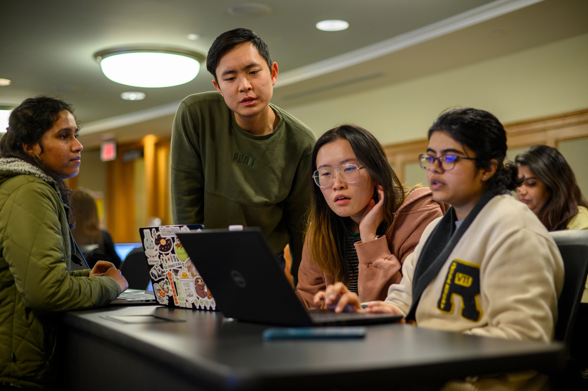
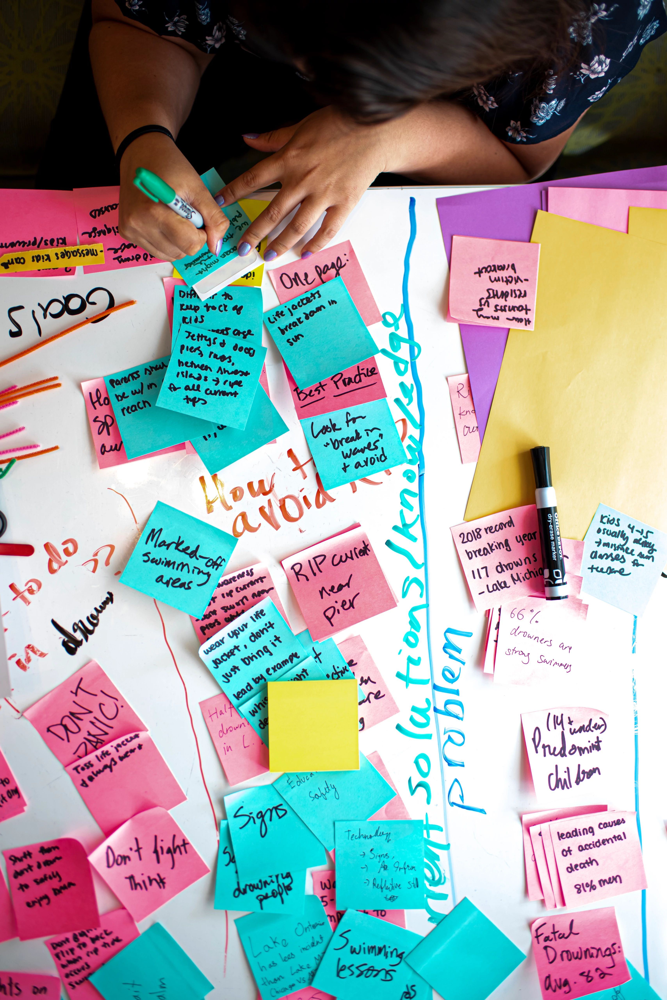

The University of Michigan boasts a vibrant and diverse array of
student communities that reflect the institution's commitment to
fostering an inclusive and dynamic campus environment. From
academically-focused groups and professional organizations to cultural
clubs and recreational sports teams, students at UMich have a
multitude of opportunities to connect with peers who share their
interests and passions. These communities not only provide a platform
for personal and professional growth but also play a crucial role in
promoting a sense of belonging among the student body. Whether through
participating in community service projects, attending cultural
events, or engaging in lively discussions, students at the University
of Michigan can find a niche that resonates with their values and
aspirations, enriching their collegiate experience and leaving a
lasting impact on the broader campus community.
Student Organizations

Student organizations at the University of Michigan are a
cornerstone of the campus experience, offering students a chance to
engage deeply with their interests, develop leadership skills, and
foster meaningful connections. With over 1,700 registered student
organizations ranging from academic and professional groups to
cultural, social, and service-oriented clubs, there is truly
something for everyone. These organizations provide students with
invaluable opportunities to apply classroom knowledge to real-world
contexts, collaborate on projects, and build networks that can be
beneficial long after graduation. Whether it's through joining a
club related to their major, participating in community service, or
exploring new hobbies, students at UMich can enrich their university
experience and contribute to the dynamic campus culture. For more
information, visit the Student Organizations
website.
First-Generation Student Center

The First-Generation Student Center at the University of Michigan is
a dedicated space designed to support first-generation college
students as they transition into and navigate their university
experience. This center offers a comprehensive array of resources,
including academic advising, financial aid guidance, and career
counseling, tailored to address the unique needs and challenges
faced by first-gen students. Additionally, it serves as a hub for
community-building, providing a welcoming environment where students
can connect with peers, attend workshops, and participate in social
events that foster a sense of belonging. By championing the success
of first-gen students through targeted support services and
advocacy, the First-Generation Student Center plays a crucial role
in promoting equity and inclusion on campus. It empowers students to
overcome barriers, celebrate their identities, and achieve their
academic and personal goals at the University of Michigan. For more
information, visit the First-Generation Student Center
website.